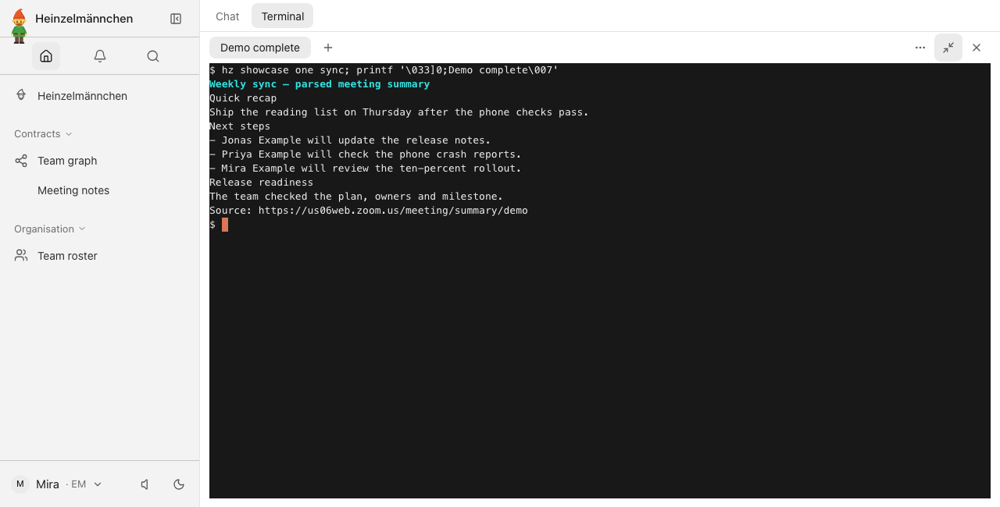
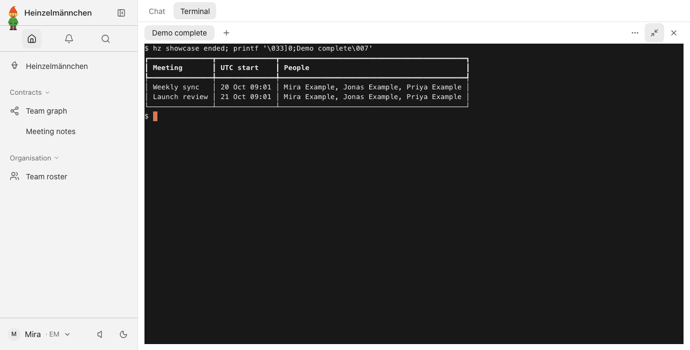
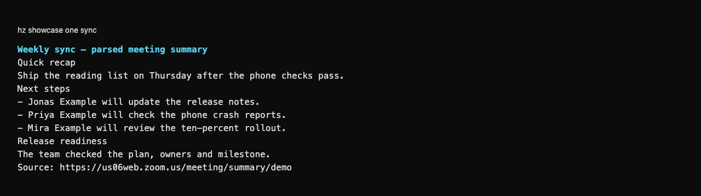
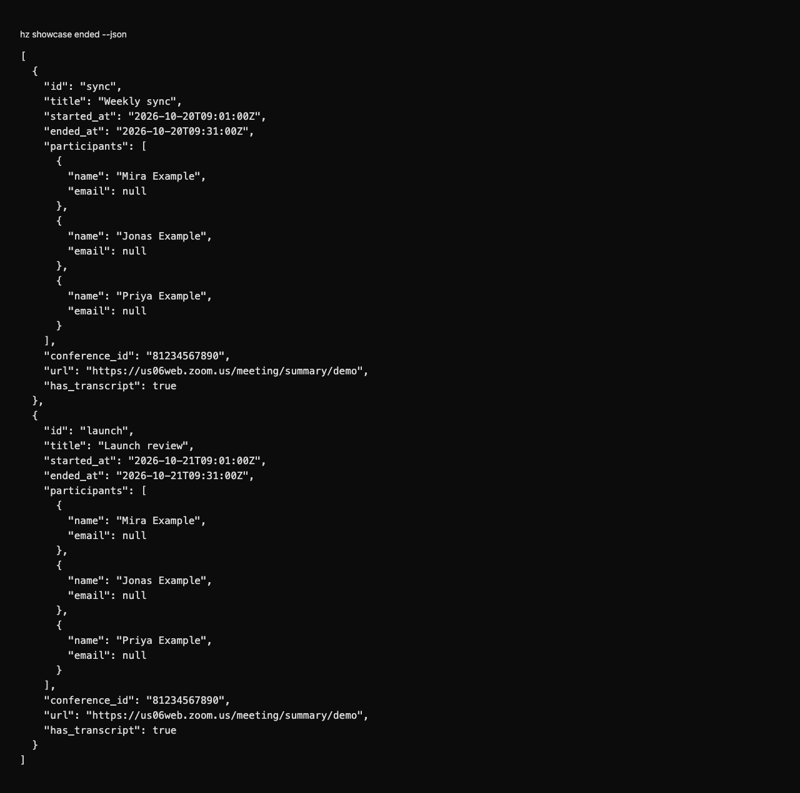
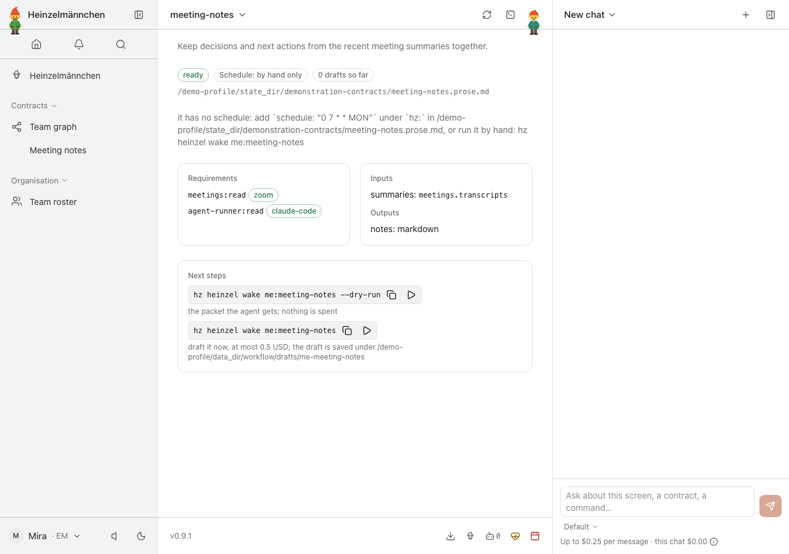

heinzel-zoom
Isolated demonstration profile · Core 0.9.1 · Review these captures before committing. Click an image to inspect it at full size.

UI · Decisions and next steps from a summary email — fixture-only requester, real Zoom parser
UI · Find the recent summarized meetings — fixture-only requester and fictional mailbox
CLI · Read a meeting summary in the shell — fixture-only requester, real Zoom parser and fictional mailbox
CLI · Structured summarized-meeting results for workflows — fixture-only requester, no verbatim transcription
UI · Meeting notes combines the declared source inputs — local demonstration, no report generated